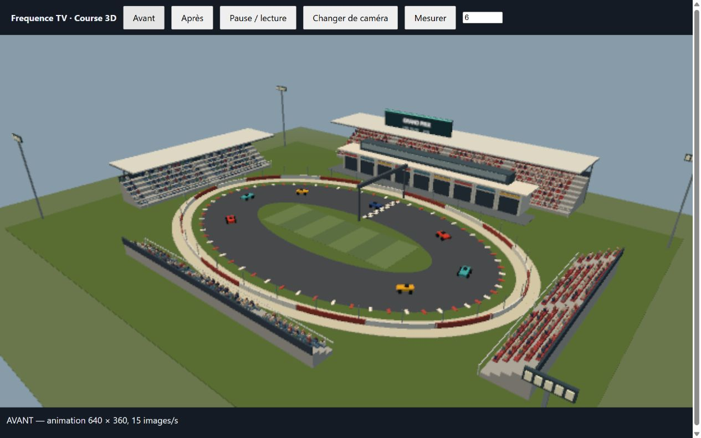
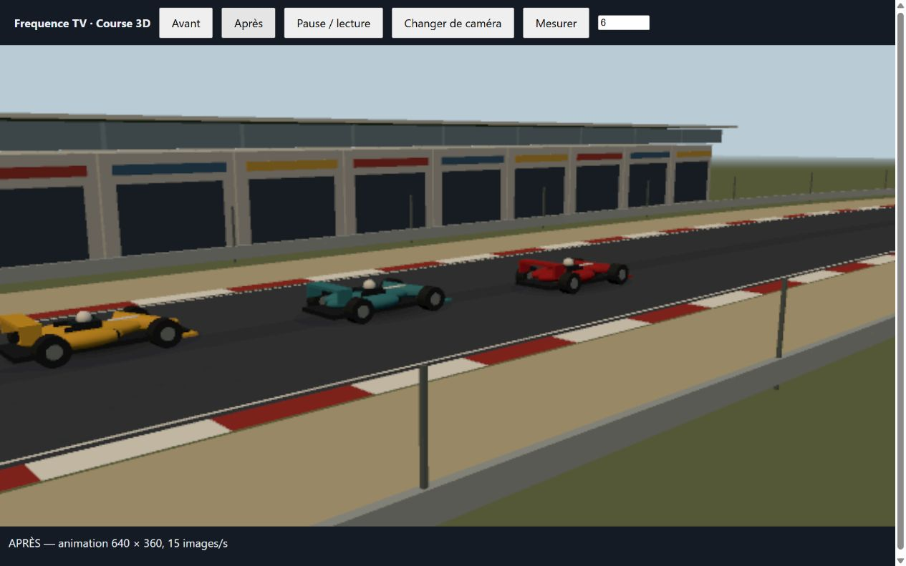

FREQUENCE TV · CANDIDAT LOCAL 2.3.17Une course filmée au plus près
Circuit asymétrique, voitures aux volumes arrondis, cockpit et roues détaillés, asphalte texturé et ombres de contact. Deux angles de suivi alternent toutes les 12 secondes. L’animation reste procédurale en 3D, sans vidéo ni son.
Avant · vue générale du circuit
Après · caméra proche des voitures
Budget du programme TV : 640 × 360 conservé, cadence TV cible 15 images/s. Premier banc : 118 → 14 appels de dessin, 45 756 → 18 734 triangles au cadrage comparé. Une petite texture GPU supplémentaire, aucun téléchargement de média.
Voir l’animation et basculer avant/après · Voir dans la villa · Résultats et limites
Version locale — non publiée.